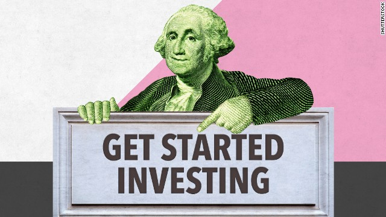
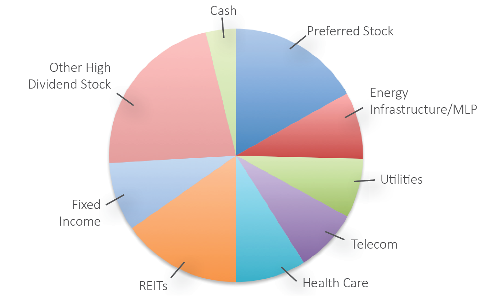
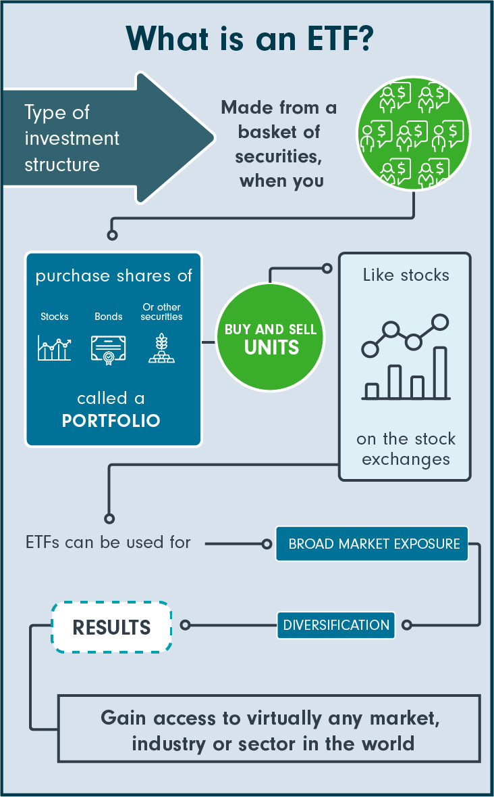

Getting Started
Investing in the stock market can be overwhelming when you're starting out. There could be many questions that you are having as you're thinking about investing. How much should you invest? What happens if my investment goes down? where do you even do this investing stuff on ? Not to worry my friend, I will set you up for the best possible success because I know that if you're in your 20s you probable don't have much money to waste on losses, plus I don't want you to regret investing. You might be surprised but some people never recover from a big loss. After the 2008 stock market crash. There were many people that got out of the stock market for good and swore to never invest in it again. I don't want that to be you because the stock market is a great way to grow your capital if you do it right and you do it safely.
First thing you need in order to invest is a stock brokerage account. A stock broker is a person who fills in the order request of the stock that you are trying to buy or sell. Back in the day it used to be a hassle because you had to call them. However nowadays technology has made things a lot easier for people to buy stocks. You can now use your banking app, or third party trusted app like Wealthsimple or Robinhood. These are the top investing apps that are used today:
Each trading platform is unique and has their own advantages and disadvantages so you need to do your own research before opening any kind of account. For example, some might charge higher fees for buying or selling a stock, Others might give you the option to trade things such as Cryptocurrency and Options which we won't get into because they are more risky and we don't want you to lose your money. I personally have used RBC Direct Investing and Wealthsimple and they're both great, however RBC doesn't offer Cryptocurrency or options trading. Find which platform fits your needs and stick with it.
Stocks
So now that you created your brokerage account, you want to jump right into buying stocks. Not so fast, before we can think about buying stocks we need to understand what stocks actually are. When you buy a stock (also called a share) it means that you are buying a portion of the company. That means if you take all the shares that the company has to offer and multiply that by the share price you would get the company's market cap. Market cap means how much the company is worth. Each company on the stock market has a "ticker symbol", what that means is the name of the company on the stock market. For example Nvidia's ticker symbol is NVDA, Apple's ticker symbol is AAPL, and so on. These are not important to know since you can type in the company name on your app and you'll get the ticker symbol but it's good to know if you want to sound sophisticated when you're telling your friends about all the sweet investments you have.
Now that we understand what buying a stock means, we can see how risk can come into play. What if you buy some shares in Apple and the company doesn't perform well? that means that the share you bought just went down in value. When buying individual stocks you need to know that you are taking on the most risk compared to any other type of investment. You will understand why as you read more about other types of investments, but the main reason for the high risk is because there's no diversification when you buy one stock.
diversifying Your Portfolio
Diversification is your best friend when you're an investor. Diversifying your Portfolio means to divide the money you plan to invest across different asset classes. This means to buy stocks in different sectors in our economy. Let's say you have $5,000 to invest. You need to pick different stocks that have a negative correlation between each other, so that if one of your stocks in the technology sector goes down, your other stocks in different industries won't be affected. This is the best way that human kind has discovered to mitigate with the risk that comes with investing. However, you need to know this next statistic so that you can be humbled and don't think you're a stock picking wizard after getting lucky with some stocks. The statistic quotes "Only 24% of hedge fund managers outperform the S&P500". Let's try to understand this statistic. Hedge fund managers are who wealthy people trust with millions of dollars to pick the right stocks for them. The S&P500 is a basket of stocks that has a combination of the top 500 fortune companies in the United States. This means that the hedge fund managers that devoted their whole life to study the stock market to pick the right stocks were not able to beat the moving average of just buying the S&P500 and holding. Therefore if these very smart people that have millions of dollars to pour into the stock market couldn't beat it, what makes you think that you could? Maybe you're the next stock market wizard but for the rest of us, we're most likely going to end up losing. With all that, I'm not saying not to invest in individual stocks, but if you're going to invest in them, you need to invest with money that won't affect your life if it disappears.
ETFs
Now you're probably saying to yourself "I don't want to invest in stocks if I have a high chance of losing my money". This is when we get to our second option of investing in stocks. ETF stands for Exchanged-Traded Funds, what that means is that ETFs are like individual stocks however they hold more diversified assets such as stocks, commodities, bonds, and many other types of investments. This is my personal favorite way of investing because it's basically an already diversified portfolio that you can hold for years while not worrying too much that all your money is going to disappear. There are many types of ETFs that are available out there so do your research. My personal favorite ETF that I'm currently holding is ZQQ, it has made me over 50% profits in the past year. It basically mimics the S&P500 which is a safe choice that you can't go wrong with it long term.
You can also look into starting a business as a side hustle while working a job. In my case I started a dropshipping website where I found products for a cheaper price and sold it for more. I also started a landscaping business in the summer and a snow removal business in the winter that made me a good amount of money when I was younger. There are lots of ideas that can start a Successful business so get creative and keep in mind to watch your spending. think of your income as a stream of water and your savings is the bucket, your bucket of water won't be filled if there are holes in the bucket.